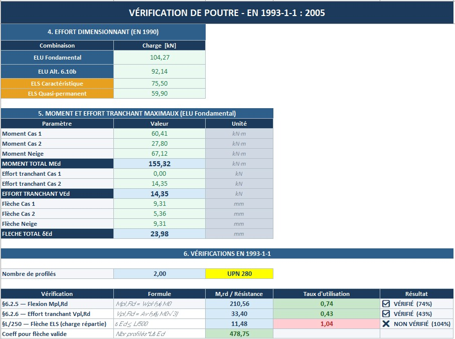
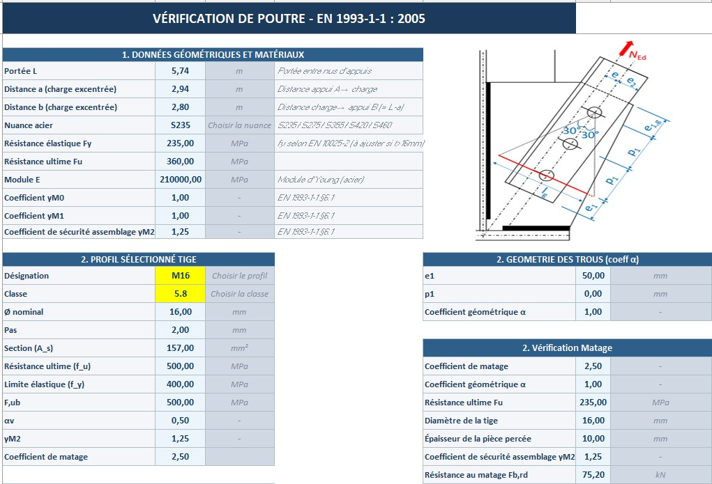

PR-03 : Outils métier
Outils de dimensionnement Eurocodes
Trois classeurs de calcul, pour arrêter de recopier les mêmes vérifications d'un dossier à l'autre.

TypeOutils de calcul
SortieExcel avec macros
NormesEC2 et EC3
Année2026
Le besoin Automatiser ce qui se refait à chaque dossier
En bureau d'études, une part du travail se répète : mêmes vérifications, mêmes bibliothèques de sections, mêmes tableaux recopiés d'un dossier à l'autre. Plutôt que de refaire, j'ai créé un seul classeur excel pour regrouper tout ça.
Les tâches du classeur
- Dimensionnement de poutres métalliques, EC3. Bibliothèque de profilés, vérifications de résistance et de stabilité, graphiques de sollicitations et feuille illustrée.
- Ferraillage béton armé, EC2. Bibliothèques bétons, aciers et appuis, formules pilotées par listes déroulantes et recherches, sorties de ferraillage.
- Descente de charges. Chargements par niveau et vérification de l'équilibre des moments aux états limites ultimes et de service.
- Interface de navigation. Feuille de sommaire masquée, macros de navigation, raccourcis clavier et menu de recherche pour circuler dans les classeurs.
Images Quelques illustrations


Bilan
Ce que j'en retiens
Générer un classeur par le code oblige à formaliser la méthode de calcul avant de l'appliquer. On ne triche plus avec les hypothèses quand il faut les écrire dans un classeur.